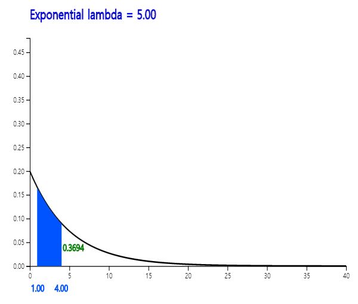

Most of continuous data obtained in real life follow a normal distribution, but sometimes it is not the case. Let's take a look at the following examples.
- Inter-arrival time of coming calls between 9 am and 10 am in an office.
- Time interval between defective products appearing in a factory production line.
These examples appear when events occur at the same rate at a given time (e.g., three calls per hour, etc.).
If the average number of events per unit hour is λ and \(\small X\) is the random variable of the time between events, then \(\small X\) is an exponential random variable.
λ is a parameter of the exponential distribution and the formula for the exponential probability distribution function is as follows:
Exponential Distribution
When the average number of events per unit hour is λ and the random variable \(X\) is the time
between events, the probability distribution function of \(X\) is as follows.
$$
f(x) = \lambda \, exp(-\lambda x ), \qquad x \gt 0
$$
It is called an exponential distribution and its expectation and variance are as follows.
$$
E(X) = \frac{1}{\lambda } , \quad V(X) = \frac{1}{\lambda^2}
$$
The exponential distribution is similar to the geometric distribution in discrete probability distributions. <Figure 5.4.14> and <Figure 5.4.15> show the exponential distribution function for different parameters.
<Figure 5.4.14> Exponential distribution when λ = 1.0

<Figure 5.4.15> Exponential distribution when λ = 5.0
『eStatU』 can easily calculate a probability for various values of the exponential distribution.
Example 5.4.7
If the life span of a product has the average of 10 hours and follows an exponential distribution, obtain the following probabilities using 『eStatU』.
1) What is the probability of a product having a lifespan of less than 5 hours?
2) What is the probability of a product having a lifespan more than 10 hours?
Answer
In 『eStatU』, select [Exponential Distribution] and enter λ = 10. Click the [Execute] button to reveal the graph shown as <Figure 5.4.16>.
[Exponential Distribution]
λ =
0.1
10
<Figure 5.4.16> Exponential distribution when λ = 10.0
1) Enter 5 at the box of the second option below the distribution graph as <Figure 5.4.16> and click the [Execute] button. The probability is 0.3935.
2) Similarly, enter 10 at the box of the third option below the distribution graph as <Figure 5.4.16> and click the [Execute] button. The probability is 0.3679.
Practice 5.4.5
A product has an average life expectancy of 1000 hours and follows an exponential distribution. Use 『eStatU』 to obtain the following probabilities.
1) What is the probability that the lifespan of the product is less than 700 hours?
2) What is the probability that the product has a lifespan of 1000 hours or more?